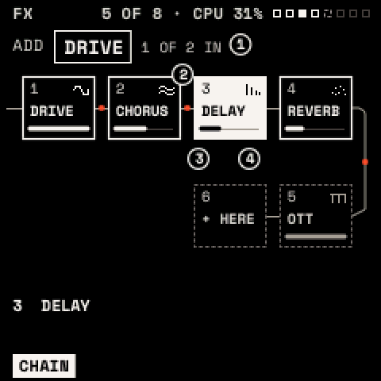

Effects
The effects are a chain of up to eight modules, played in order, followed by a limiter. Each type can be in the chain twice, except DELAY and REVERB (once each). The chain is part of the sound and is saved with it.
How to

Add an effect
- Press FX for the chain view.
- Turn KNOB 1 (or ALGORITHM) to choose a type, and KNOB 2 (or SELECT) to choose a slot. Past the last effect the slot is + HERE.
- Hold FX and press OCT+. The effect is added below the chosen slot.
Edit it: press FX twice to open the chosen effect. ALGORITHM steps its pages, SELECT moves to the next effect in the chain. Press FX to return to the chain.
Move it: on the chain view, turn KNOB 3. Set its mix: KNOB 4.
Remove it: on the chain view, FX + OCT−. Bypass it: on its own page, FX + OCT− (and OCT+ to bring it back), or hold FX and press its white key (F3 for the first effect … F4 for the eighth).
Every change can be undone with SAVE + OCT−. The top line shows how many effects are in the chain and an estimate of their processor cost; REVERB is the costliest.
The effects
| Effect | Page 1 | Page 2 | Notes |
|---|---|---|---|
| DRIVE | TYPE, DRIVE, TONE, MIX | TYPE: SOFT, TUBE, HARD, FOLD. TONE tilts darker or brighter. | |
| CHORUS | RATE, DEPTH, DELAY, MIX | SPACE: FEEDBACK, SPREAD | SPREAD widens the stereo. |
| DELAY | SYNC, TIME, FEEDBACK, MIX | TONE: MODE, LP, HP | SYNC FIXED makes TIME a note value. MODE: STEREO or PINGPONG. LP and HP filter the repeats. Up to 750 ms. |
| REVERB | TYPE, SIZE, PREDELAY, MIX | TONE: DECAY, DAMP, LOW CUT, WIDTH | TYPE: PLATE or HALL. |
| OTT | DEPTH, TIME, UPWARD, DOWNWARD | BANDS: LOW, MID, HIGH | Three-band compression, up and down. Brings out quiet detail. |
| EQ | POINTS: POINT, FREQ, GAIN, Q | SHAPES: SHAPE, FREQ, AMOUNT | Three bands (LOW, MID, HIGH), ±18 dB. SHAPES sets all three at once (FLAT, HIGH PASS, LOW PASS, BAND PASS, NOTCH, TWO PEAKS, SMILE, TELEPHONE, AIR). Band types on VALUES. |
| FLANGER | SYNC, RATE, DEPTH, MIX | TONE: DELAY, FEEDBACK, SPREAD | Negative FEEDBACK sounds hollow. |
| PHASER | SYNC, RATE, DEPTH, MIX | TONE: CENTER, FEEDBACK, STAGES, SPREAD | STAGES 2–12. |
| FILTER | TYPE, CUTOFF, RESO, MIX | DYNAMICS: DRIVE, FOLLOW | 21 types (below). FOLLOW moves the cutoff with the input level (auto-wah). |
| BITCRUSH | BITS, RATE, MIX | BITS 1–16; RATE lowers the sample rate. | |
| TREMOLO | MODE, SYNC, RATE, DEPTH | SHAPE: SHAPE, SPREAD | MODE: TREMOLO or AUTOPAN. SHAPE: SINE, TRIANGLE, SQUARE, SAW. |
| RING MOD | FREQ, SHAPE, SPREAD, MIX | SHAPE: sine to square carrier. | |
| TAPE | WOW, FLUTTER, SATURATE, MIX | TONE: TONE, HISS | TONE darkens like a worn head; HISS adds gated tape hiss. |
With SYNC FIXED, the rate of DELAY, FLANGER, PHASER and TREMOLO is a note value of the tempo. Every effect also has a VALUES page. Ranges and defaults are in the parameter reference.
FILTER's types: the voice filter's ten (LP 12/24, HP 12/24, BP 12/24, NOTCH, PEAK, LADDER, FORMANT), plus LP 6, HP 6, DIRTY LP, COMB + and COMB − (metallic), LO SHELF, HI SHELF and TILT (RESO is the gain), DJ (left of centre a low pass, right a high pass), LO-FI and RING.
Tip: a one-knob DJ filter: FILTER type DJ, CUTOFF at the centre. On its page press ENV twice, choose MACRO 1 and CUTOFF, then set POLARITY to BIPOLAR and AMOUNT to about 50 %. HOME's KNOB 1 now sweeps from dark to thin.
Tip: OTT before the reverb squashes the dry sound; after it, it lifts the tail.